新手指南 · Getting Started
致新来的朋友：欢迎加入佛山。在这里，你将开启一段全新的游戏旅程。 本页内容整理自《EarthMC 新手指引》《指令汇总》与官方《城镇指南》， 保留原文表述，仅将示例城市替换为佛山。
EarthMC 是一个以 Towny 插件为基础的地缘政治服务器（但是没有战争插件）， 加入城镇进行发展是服务器大多数玩家的选择。
我猜你可能想知道，为什么在加入我们之前，你已经收到了无数城镇的邀请—— 这是因为居民数量的增加可以提高一个城镇的面积上限， 很多城镇疯狂拉人就是为了增加这个上限。当然，这不是我们拉你进来的目的—— 我们希望，我们能够共同建设一个团结友好的游戏社区，留下美好的游戏回忆。
play.earthmc.net 是已停用的旧地址，唯一有效地址是
join.earthmc.net。服务器满人时会排队，输入 /queue
可以查看你排在第几位。
输入 /map 可以打开服务器地图的网页链接（也可直接访问
map.earthmc.net）。地图比例为 1:500。
注意，玩家潜行时或头顶上有方块遮挡时，在地图上是不会显示位置的 （当然，这也可以用于躲避猎人的追杀）。
你的ID.earthmc.net。
用这个域名进来的朋友会自动加入你的城镇，不用手动邀请。
拉朋友一起玩的时候，把你的专属域名发给他就行。
服务器采用频道制：先加入频道，再正常打字。不是每次发言都要带前缀。
/g 可加入国际聊天频道，/chinese 可加入中文聊天频道，
/local 可加入附近聊天频道，/nc 可加入国家聊天频道，
/tc 可加入城镇聊天频道。
如果你不想看到某个频道的信息，可以输入 /ch leave 频道名。
| 频道 | 描述 |
|---|---|
/global | 全球频道，仅限英语 |
/local | 本地频道，仅距你较近的玩家可见 |
/tradechat | 买卖等交易频道 |
/ch join premium | 会员玩家频道 |
/nc 或 /nationchat | 国家频道 |
/tc 或 /townchat | 城镇频道 |
/[语言] | 一系列的语言频道，如 /chinese 为加入中文频道 |
| 指令 | 描述 |
|---|---|
/ch join [频道] | 加入频道 |
/ch leave [频道] | 离开频道 |
/msg [玩家] [信息] | 向玩家发送信息 |
/r [信息] | 回复信息至你最后私信的玩家 |
/rtoggle | 打开或关闭 /r 功能 |
/mail send [玩家] [信息] | 向指定玩家发送邮件 |
/mail read | 阅读邮件 |
/mail clear | 清理邮箱 |
/ignore [玩家] | 屏蔽指定玩家的信息 |
/unignore [玩家] | 停止屏蔽指定玩家的信息 |
全球频道只允许英语，这是服务器规则。说中文请去 /chinese。
你可以传送至自己的城镇、你所在国家的城镇、盟国的首都及你的床边。 EarthMC 不支持玩家之间的传送，没有 /tpa 这类指令。
| 指令 | 描述 |
|---|---|
/t spawn | 传送至自己城镇的出生点 |
/t spawn [城镇] | 传送至指定城镇 |
/t warp [传送点] | 传送至城镇传送点 |
/t warp [城镇] [传送点] | 传送至指定城镇的指定传送点 |
/n spawn | 传送至自己国家的首都 |
/n spawn [国家] | 传送至指定国家 |
/res spawn 或 /home | 回到你的床边 |
/warp | 查看可用传送点 |
| 指令 | 描述 |
|---|---|
/rtp | 传送至地图上的随机位置 |
/rtp region [地区] | 传送至所选区域内的随机地点，例如非洲（Africa） |
服务器的货币是金锭（简称 g），一般可以通过挖矿或"签到"获得。
所谓签到，就是输入 /vote 在两个网址中给服务器投票。
投票后可以获得一个 gold crate，右键打开 gold crate 后可以获得随机数量的金锭。
每 24 小时最多 4 个金箱。
每当服务器积累 5000 个投票后，就会触发一次 voteparty 事件，
每个在线玩家可获得一个 giant gold crate（奖励金锭的数额很多）。
你可以通过 /vp 指令查看服务器触发 voteparty 事件还差多少个投票。
金锭可以用于在商店中购买物品、建立城镇/国家、扩大城镇区块等等， 请一定要保管好你的金锭。最安全的地方是末影箱——死亡不会掉落，别人也打不开。
服务器有几个大型商店，如 /n spawn ob、/n spawn mali、
/n spawn brazil 等。/n spawn western_china 是国营商店。
| 指令 | 描述 |
|---|---|
/t deposit [数量] | 向城镇银行捐钱（要在 home 区块或 bank 区块操作） |
/t withdraw [数量] | 从城镇银行取钱，只有市长或议员（Councillor）有此权限 |
/n deposit [数量] | 保存黄金至国家银行 |
/n withdraw [数量] | 从国家银行中取出黄金 |
商店必须建在 shop 类型的区块上。放置箱子后，手持商品左键点击箱子，
按提示输入价格即可。最低是 1 金换 64 件物品。
| 指令 | 描述 |
|---|---|
/qs buy | 切换商店至购买模式 |
/qs sell | 切换商店至收购模式 |
/qs price [价格] | 更改商店价格 |
/qs size | 更改商店销售数量 |
/qs staff add [玩家] | 为您的商店增加管理人员 |
/qs staff remove [玩家] | 从您的商店移除管理人员 |
/qs staff clear | 清除所有工作人员 |
/t forsale 或 /t fs 是出售整个城镇的指令。
部分玩家有可能诱使你输入这一指令以骗取你的城镇。任何让你敲这条指令的人，都值得怀疑。
城镇是 EarthMC 的基本单位。加入城镇进行发展，是服务器大多数玩家的选择。
收到邀请后输入 /accept 即可加入；开放加入的城镇可以直接申请：
/t join <城镇名>自己建城需要 64 金锭，且要站在未被认领的土地上：
/t new <城镇名>建成后占地 1 区块，区块上限为 12。之后每增加 1 位居民，上限增加 12； 加入国家后还会获得基于国家人口的国家加成。
为城镇圈地每块 16 金锭，费用从城镇银行扣除：
/t claim| 指令 | 描述 |
|---|---|
/t [城镇] | 查看特定城镇信息 |
/t here | 显示当前所处城镇的信息 |
/t list | 显示所有城镇列表 |
/t leave | 离开城镇 |
/t new [名字] | 创建新城镇 |
/t invite [玩家] | 邀请玩家入城 |
/t add [玩家] | 邀请玩家入城 |
/t kick [玩家] | 驱逐居民出城 |
/t spawn | 传送至城镇出生点 |
/t claim | 为城镇圈地 |
/t deposit [数量] | 金锭存入银行 |
/t withdraw [数量] | 从城镇银行取出金锭 |
/t warp [城镇] [传送点] | 传送至城镇传送点 |
/t warpmanager [action] | 管理城镇传送点 |
/t set wikipage | 将 wiki.earthmc.net 的链接显示在城镇公告栏和网站地图上 |
/t takeoverclaim | 从另一城镇夺取已占领区块，这种行为被称为过度索取 |
/t rank [add/remove] [玩家] [头衔] | 添加/移除玩家头衔 |
/t set [board/mayor/homeblock/perm] | 城镇权限设置 |
/t set plotprice | 设置默认区块的默认价格。设置为 -1 可防止所有城镇区块被出售 |
/t set perm [build/destroy/switch/itemuse] [resident/ally/nation/outsider] | 设置城镇权限及对应的身份组权限 |
/t toggle [explosion/fire/mobs/pvp] | 设置城镇（允许爆炸/火焰蔓延/生物生成/pvp）权限 |
/t forsale [数量] / /t fs [数量] | 将整个城镇出售。注意！部分玩家有可能诱使你输入这一指令以骗取你的城镇 |
/t buytown [城镇] | 购买一座待售城镇，价格显示在 /t [城镇] 上 |
/t merge [城镇] | 合并两个城镇 |
注意：玩家若 42 天不上线，其在服务器的 Towny 信息会被删除。 若该玩家是一个城市的唯一成员，这个城镇也会随着玩家信息的删除而被删除—— 有些人会专门寻找这样的城市，当市长快删号时加入城镇以夺取该城市。
市长 42 天不活跃时，会按顺序由任职最久的议员继任；没有议员则由最活跃的居民接任。 所以长期不上线，一定要提前打招呼。
如果一个城镇占领的区块数超过它的上限（通常因为居民流失），
其他城镇可以用 /t takeoverclaim 夺取这些超额区块。限制条件：
国家由城镇组成。首都由一个国家内的城镇担任，国家频道、传送与外交都围绕它展开。
创建国家需要 2048 金锭，且只有市长才能创建，所在城镇自动成为首都。 城镇加入国家需要满足距离要求：首都 3500 格范围内的城镇可以受邀加入， 每有一个城镇加入，范围向外扩展 1000 格。
| 指令 | 描述 |
|---|---|
/n [国家] | 查看指定国家的信息 |
/n new [国家] | 创建新国家 |
/n spawn | 传送至自己国家的首都 |
/n spawn [国家] | 传送至指定国家 |
/n leave | 使你的城镇离开国家 |
/n join [国家] | 城镇加入国家 |
/n add [城镇] | 邀请城镇进入国家 |
/n kick [城镇] | 将城镇踢出国家 |
/n deposit [数量] | 保存黄金至国家银行 |
/n withdraw [数量] | 从国家银行中取出黄金 |
/n outlaw add/remove [玩家] | 将玩家放逐出国，阻止其加入/传送至该国城镇 |
/n outlawlist [国家] | 查看一个国家的放逐名单 |
/n ally add/remove [国家] | 添加/移除盟友国家 |
/n enemy add/remove [国家] | 添加/移除敌对国家 |
/n pact [action] [国家] | 管理国家盟约 |
/n embargo [action] [国家] | 管理国家禁运 |
/n rank add/remove [玩家] [头衔] | 授予/撤销居民的国家头衔 |
/n toggle open | 切换国家的公开性 |
/n delete | 删除国家 |
/n set wikipage | 将 wiki.earthmc.net 链接显示在国家公告栏和网站地图上 |
/n set king [玩家] | 更换国家首领 |
/n set capital [城镇] | 设置国家首都 |
/n set spawn | 设置国家出生点 |
/n set board [信息] | 设定国家公告 |
/n set taxes [数量] | 按 24 小时为周期设定国家税收 |
/n set title [头衔] | 为国家成员设定头衔 |
/n merge | 合并两个国家 |
/n online | 查看国家在线人员 |
/emcmap nationcolor [HEXcolour] | 在 EMC 地图上设置国家区块颜色（仅限会员） |
/emcmap nationoutline [HEXcolour] | 在 EMC 地图上设置国家轮廓颜色（仅限会员） |
/res set leaderprefix | 将国家领导人聊天前缀设置为 Ⓚ 或 Ⓠ（国王或女王） |
Quarter 在官方中文文档中被称为"自定义空间"。 标准区块只能管一个 16×16×全高的柱子，而 Quarter 是可以自定义大小的长方体。
Quarter 类型在默认的城镇、区块类型的基础上进行扩展。市长和议员可以更改 Quarter 类型：
/q type [类型]| Quarter 类型 | 描述 |
|---|---|
| 公寓（Apartment） | 默认的 Quarter 类型 |
| 客栈（Inn） | 允许使用 Quarter 内的床铺 |
| 车站（Station） | 允许使用船只和矿车等载具 |
手持燧石（没有就 /q wand 免费领一个），左键点第一个角、右键点对角，
形成一个长方体轮廓，然后 /q create。
长方体必须完全位于同一个城镇内，不能包含未认领的荒野，不能与已有 Quarter 重叠，
也不能超出世界高度上下限。
| 指令 | 描述 |
|---|---|
/q claim | 认领一个在售的 Quarter |
/q create | 创建一个 Quarter |
/q delete | 删除你当前所在的 Quarter |
/q delete plot | 删除所在区块内的所有 Quarter |
/q evict | 清除目前 Quarter 的拥有者 |
/q edit | 使用参数编辑 Quarter 的指令 |
/q here | 查看你所在 Quarter 的信息 |
/q pos | 在指定位置创建 Quarter |
/q selection add | 将选定的长方体添加到当前的选择范围 |
/q selection clear | 移除所有已添加的长方体 |
/q selection copy | 将当前添加的长方体复制到你所在的位置 |
/q selection paste | 粘贴当前复制的长方体 |
/q set name [名字] | 重命名 Quarter |
/q set perm | 设置权限，逻辑与 /t set perm 和 /plot set perm 一致 |
/q set particlesize | 设定 Quarter 特效粒子大小。若不在 Quarter 内，则会对所有 Quarter 生效 |
/q remove | 从当前选择中移除你所在的长方体 |
/q sell [价格] | 以一定价格出售 Quarter |
/q toggle embassy | 切换 Quarter 的大使馆状态 |
/q toggle entryblinking | 切换轮廓边框到闪烁模式 |
/q toggle constantoutlines | 开启/关闭粒子轮廓显示 |
/q toggle entrynotifications | 进入 Quarter 时启用/禁用聊天通知 |
/q toggle sellondelete | 启用/禁用删除房主后自动出售 Quarter 的功能 |
/q trust add | 为 Quarter 添加受信任者 |
/q trust remove | 移除 Quarter 中的受信任者 |
/q trust clear | 清除 Quarter 中的所有受信任者 |
/q unclaim | 放弃 Quarter 的所有权 |
/q set colour | 更改 Quarter 轮廓的粒子颜色 |
/q wand | 免费获得一个燧石用以魔杖 |
/q set entrynotifications chat/hotbar | 切换 Quarter 的通知显示方式，默认在物品栏上方显示 |
区块是城镇内部的地皮单位。市长可以给居民授予头衔，不同头衔对应不同权限。
| 区块类型 | 描述 |
|---|---|
| 默认（default） | 默认区块类型，适用于个人建筑、住宅等 |
| 店铺（shop） | 允许创建店铺 |
| 竞技场（arena） | 允许玩家对战（PvP），死亡不掉落物品和经验 |
| 保险库（Vault） | 禁止所有受信任玩家和议员进入该地块。只有镇长和被明确信任的玩家 / plot trust add 才能使用该地块 |
| 农场（Farm） | 允许收割作物，但不能破坏其他类型的方块；允许对生物造成伤害 |
| 大使馆（Embassy） | 允许来自其他城镇的居民购买区块。被购买后，区块所有者仍享有主权。这多用于在不同城镇开设商店、拓展海外市场 |
| 客栈（Inn） | 允许任何人使用区块内的床 |
| 荒野（wild） | 仅允许开采石头（安山岩、花岗岩、闪长岩）、矿物、矿石和深板岩。这一权限支持在设立公共矿场的同时保护建筑物 |
| 指令 | 描述 |
|---|---|
/plot fs [价格] | 设置区块领取价格 |
/plot claim | 购买区块 |
/plot unclaim | 放弃区块 |
/plot set [区块类型] | 设置区块类型 |
/plot set [最小加入天数/最大加入天数/clear] | 根据玩家加入城镇的日期，限制他们是否可认领区块，允许市长为新玩家或老玩家预留土地。此设置不影响大使馆地块 |
/plot set perm [build/destroy/switch/itemuse] [resident/ally/nation/outsider] | 设置区块权限，及对应的身份组（镇民/盟友/国家/外来者）权限 |
/plot toggle [explosion/fire/mobs/pvp] | 设置区块（爆炸/火焰蔓延/生物生成/允许 pvp）权限 |
市长可以给居民授予头衔：
/t rank add [玩家] [头衔]| 头衔 | 权限 |
|---|---|
| 议员（Councillor） | 对所有城镇地块的完全访问权限，并可使用除 /t unclaim、/t set mayor、/t delete 等之外的大部分城镇指令。议员可以踢出除市长和其他议员之外的所有人，从城镇银行提取金币，编辑城镇/区块的权限。由于议员可能对城镇造成不利影响，此身份应仅授予最被信赖的市民 |
| 受信任者（Trusted） | 与议员级别类似，可以无视区块所有权访问所有区块，但不能像议员那样使用城镇指令 |
| 建造者（Builder） | 可以编辑非个人所有区块。只要地块不属于某个玩家，他们就可以在城镇的任何地方建造、打开箱子、使用物品和破坏方块 |
| 房地产经纪人（Realtor） | 可以将城镇中目前无人拥有的地块挂牌出售，也可以将其下架并设置为大使馆。拥有城镇内所有无人拥有区块的 /plot 有关权限。此外还拥有在自定义空间（Quarter）内驱逐、出售、改变颜色、更改类型及切换大使馆功能的权限 |
| 定居者（Settler） | 可以为城镇认领新区块 /t claim |
| 招募者（Recruiter） | 可以邀请其他玩家入城 /t add [玩家] |
| 警察（Police） | 可以放逐玩家 /t outlaw add [玩家] |
| 财务主管（Treasurer） | 可以从城镇银行提取黄金 /t withdraw [数量] |
服务器启用了 mcMMO。技能等级会带来实际效果，也有对应的排行榜。
| 技能 | 描述 |
|---|---|
| 采矿（Mining） | 开采石头/矿石 |
| 伐木（Woodcutting） | 加速伐木 |
| 草药学（Herbalism） | 收割农作物和植物 |
| 挖掘（Excavation） | 挖掘泥土、沙子、砾石和黏土 |
| 钓鱼（Fishing） | 钓鱼 |
| 徒手（Unarmed） | 徒手搏斗 |
| 射箭（Archery） | 使用弓箭和弩 |
| 剑术（Swords） | 剑术战斗 |
| 斧（Axes） | 使用斧战斗 |
| 驯服（Taming） | 驯服动物 |
| 维修（Repair） | 手持损坏工具右键点击铁块 |
| 杂技（Acrobatics） | 遭受坠落伤害 |
| 炼金术（Alchemy） | 炼制药水 |
| 打捞（Salvage） | 钓鱼与维修 |
| 冶炼（Smelting） | 采矿和炼制矿石 |
| 指令 | 描述 |
|---|---|
/skill [技能名] | 关于这项技能的统计数据 |
/mctop | 所有玩家排名 |
/mctop [技能名] | 指定技能排名 |
/mcrank | 显示你在各项技能中的排名 |
/inspect [玩家] | 显示其他玩家的技能数据 |
| 指令 | 描述 |
|---|---|
/party create [名字] | 创建团队（仅限会员） |
/party 或 /party info | 关于您团队的信息 |
/party invite [玩家] | 邀请玩家至团队 |
/partychat 或 /pc | 切换团队聊天频道 |
/party join [队长名字] [密码] | 加入团队，密码可选 |
/party quit | 退出团队 |
/party disband | 解散团队 |
/party password [密码] | 设置团队加入密码 |
/party kick [玩家] | 将玩家踢出团队 |
/party leader [玩家] | 移交团队队长给指定玩家 |
| 指令 | 描述 |
|---|---|
/hat | 把手中的物品当做帽子使用 |
/fly | 在 hud 飞行 |
/nick [名字] 或 /nick off | 设置、清除昵称 |
/seen [玩家] | 查看某人上次在线时间 |
/discord link | EMC Discord 上的 Pink 用户名 |
/ch join premium | 加入仅限会员的聊天室 |
/emcmap nationcolor [hex] | 更改网站地图国家区域填充色 |
/emcmap nationoutline [hex] | 更改网站地图国家边缘轮廓色 |
| 指令 | 描述 |
|---|---|
/wipelore | 删除您手上工具的制造信息 |
/bottle store [经验数值] | 将自己的经验保存在经验瓶中 |
/mcrank | 查看自己各项 mcMMO 技能的服务器排名 |
/queue | 查看排队位置 |
使用如下指令可将你的经验存入经验瓶并进行相关操作：
| 指令 | 描述 |
|---|---|
/b convert | 将你的所有非标准经验瓶转换为标准附魔之瓶 |
/b get [amount/max] | 将你的经验值转化为特定数量的、或最大数量的附魔之瓶 |
/b mend | 生成一个能恰好修复您手中工具的经验瓶 |
/b mend all | 使用经验值直接修复身上和手上的工具，而不是生成经验瓶 |
/b stats | 显示当前等级对应的经验值 |
/b store [amount/max] [quantity/max] | 将指定数量的经验存入经验瓶中，输入 max 将取最大值 |
/b thrown | 切换商店里的瓶子是被丢弃还是在使用后立即被消耗掉 |
/b until [等级] | 告诉你达到指定等级需要多少经验值 |
本服特有的工作台合成配方，共十六种：
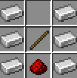
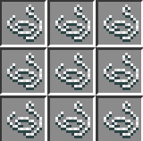
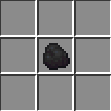
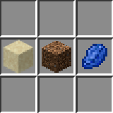
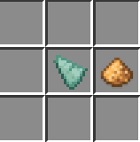
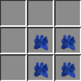
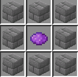
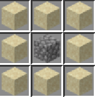
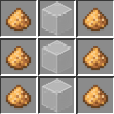
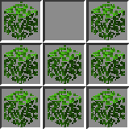
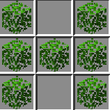
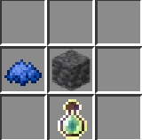
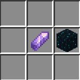
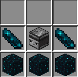
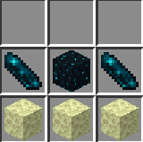
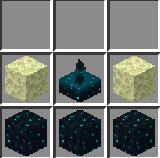
配方图取自 EarthMC 官方《城镇指南》中文版。
我们所在的城市是佛山市（Foshan），位于大明共和国广东省。 佛山的城镇公告栏写着："一座美丽而现代的城市，欢迎你的加入。"
我们是服务器中明国（Ming）的成员。明国是 EarthMC 中华地区规模最大的华人国家，
2026 年 4 月 23 日建国于南京，现任皇帝为 Judgemen_t，首相为 PreviousYun，
首都为南京，欢迎输入 /n spawn 参观。
/t spawn Foshan。/plot claim 买下，然后开始建造。bbdqz，或加入中文频道 /chinese 找人。
说明你的游戏 ID、大致在线时间、想做的事（建筑 / 挖矿 / 种田 / 经商）。
/tpa 这类指令。
你只能传送到城镇出生点、国家首都、城镇传送点，或者自己的床。
这套设计是为了让地理位置真正有意义。
/global 仅限英语，方便各国玩家交流。
中文玩家集中在 /chinese 频道，进去正常打字就行。
/t takeoverclaim 夺取超额部分。
城镇的 home 区块永远受保护。
/vote 投票（每天最多 4 个金箱）和挖矿。
中期靠开店——但店要开在人流大的地方，首都的商业区通常最赚。
/t spawn 回自己城镇，/n spawn 回国家首都，
/home 回床边。如果还没加入城镇，用 /map 对照坐标走回来，
或者入服未满 24 小时的话直接用 /rtp 重新开始。
/help 不一致，以游戏内为准。